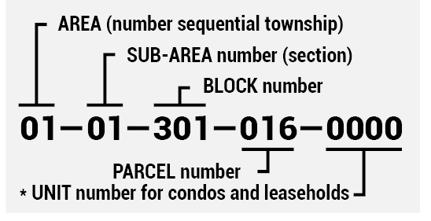

by Hal Dardick, Director of Research
Office of Cook County Treasurer Maria Pappas
118 North Clark Street, Room 112
Chicago, Illinois 60602
(312) 443-5100
Introduction
Property taxes have served as a way to fund government in the United States since the founding of the country — at a time when property ownership typically was synonymous with wealth, making it a mostly progressive tax in the 18th and 19th centuries.
The federal government and the vast majority of state governments have stopped using that tax to fund operations , in part because property ownership and wealth are no longer so closely linked, making it a regressive tax in many instances. Nevertheless, property taxes continue to be a major source of revenue for local governments.
In 40 U.S. states, the biggest single source of income for local governments is the property tax, according to the Pew Research Center.
That remains the case despite a growing body of studies that question whether the overall property tax burden can be spread equitably, whether the revenue it generates can be distributed fairly and whether the enforcement of tax payments through sales of delinquent taxes disproportionately affects people of color.
In Illinois, those questions have dominated the debate over property taxes in recent decades, leading to limits on property tax increases, a revamping of the Cook County property tax assessment system and changes to the way the state distributes public-school funding to make educational opportunities more equitable between wealthier and poorer communities.
Figure 1: Share of education funding by jurisdiction (Source: Taxpayers’ Federation of Illinois)
Nevertheless, Illinois continues to rely heavily on property taxes to fund local government, particularly for kindergarten through 12th grade public education. Half of public-school funding in the state comes from property tax-derived revenue, according to the Illinois State Board of Education.
In Illinois, 56% of all local government revenue, not including state funding for local governments, is derived from the property tax, Pew found. Local governments in 26 states rely more, in terms of percentage of revenue, on property taxes than Illinois.
When one includes state funding for local governments, the share of local government revenue from property taxes in Illinois drops to 40%, according to the Lincoln Institute for Land Policy. That compares with an average of 30% across the nation.
Although many other states rely more heavily, in percentage of local revenue, on property taxes to fund local government, Illinois still has the nation’s second-highest effective property tax rates — defined as the percentage of a property’s value that is paid in taxes each year, according to multiple studies. Only New Jersey has a higher effective property tax rate. (See Figure 2)
Looked at another way, the median property tax bill in Illinois between 2015 and 2019 was $4,419, compared to an average of $2,471 across the nation, according to the Lincoln Institute. That median Illinois tax bill is the sixth highest in the country.
Illinois’ property taxes are high in comparison with other states because they are the primary source of funding for both public schools and local government worker pensions.
The State of Illinois pays about 42% of all kindergarten through 12th grade public education costs, compared with a national average of about 47%, according to the National Education Association. That leaves federal aid — which is declining — and property taxes to pick up the rest.
In addition, many municipalities across Illinois have some of the highest unfunded pension liabilities in the U.S., which can result in steep tax increases as municipalities and counties take steps to comply with a state law that mandates those local pension funds achieve 90% funding in the coming decades.
Another factor driving up the overall cost of local government in Illinois is the sheer number of local governments that have been created in Illinois. Surveys from both the U.S. Census Bureau and the Civic Federation government budget watchdog group found that Illinois has the most local governments of any state in the union. Each government has its own bureaucracy that adds costs borne by taxpayers.
Local governments tend to rely heavily on property taxes because the amount collected is generally stable. When the economy falters, the other two major local government sources of revenue — sales taxes and local income taxes (Illinois does not have the latter) — tend to decline.
Property taxes in many states don’t decline with a downward turn in the economy because of the way they are determined. In those states, local government property tax levies — the amount governments seek to collect in a given year — are established after budgets are drawn up, without regard to ups and downs in the values of the properties on which the taxes are paid. Sales and income taxes, in contrast, are fixed at certain percentages, so the receipts from those two taxes fluctuate based on consumers’ financial health.
No two states’ property tax systems are the same, and in several states, there are variations from one locale to another. But generally, there are two ways property taxes are set in the U.S.
1) In many states, like Illinois, New York and New Jersey, the levy — the overall amount of property taxes sought by local taxing agencies — is set first, followed by the tax rate. If the total value of local properties declines, the tax rate is set higher to ensure the full levy is collected from property owners.
2) In other states like California and Texas, properties are first assessed and then the rate is set, determining the amount of taxes to be collected. That method also allows local governments to increase their rates when the total value of all property declines — unless the state enacts strict rate limits.
Many states, including Arizona and California, in recent decades have enacted laws or changed their constitutions to lower limits on tax rates, according to the Lincoln Institute. In those states, property tax bills can decrease when property values decline.
|
Assessments Decrease |
|
Total Tax Amount Set |
Tax Rate Increases |
|
|
Assessments Decrease |
|
Tax Rate Increases |
|
Total Tax Amount |
|
Assessment Decreases |
|
Tax Rate is Limited |
|
Total Tax Amount |
|
One notable feature of property taxes — not just in the U.S., but throughout the world — is that all systems are dizzyingly complex, making it tough for ordinary taxpayers to understand how they work. For example, the Illinois property tax code is laid out in 233,617 words that prints out at 286 standard-size pages.
Each U.S. state devises its own tax system, often with variations by region, and other countries have similarly complex and diverse systems of property taxation.
A Lincoln Institute working paper examining European tax systems in 41 countries at the start of this century found 190 different forms of taxation. But European and other foreign governments tend to rely less on property taxes than they do in the U.S., largely because schools tend to be funded directly by national governments. The notable exception is the United Kingdom, which relies more on property taxation than the U.S., according to the Tax Foundation.
It’s also worth noting that many states, but not Illinois, tax “personal property” like cars, boats and business equipment. The 1970 Illinois constitution banned personal property taxes. To make up for the lost revenue, the state assesses a Personal Property Replacement Tax that ranges from 0.8% to 2.5% of income on businesses and utilities.
Of course, the process of determining tax levies, and each property owner’s share of the tab, is much more complex than just setting a levy and then a rate. Assessments, appeals of assessments, tax exemptions, the complex state “equalizer,” collections and enforcement all play a role.
Below is an explanation of how Illinois property taxes are calculated and collected.
Word on Property Index Numbers (PINs)
In Cook County, the Clerk assigns each a Property Index Number, or PIN, for both property record and taxation purposes. PINs are unique 14-digit numbers that identify each parcel or unit in the county.
When properties are redeveloped, sometimes they are assigned new PINs. Take the example of a single-owner building that is torn down and replaced with a condominium building. In that case, each separately owned unit in the building is assigned a PIN. Conversely, if parcels are combined to build a new single-owner structure, the multiple PINs may be consolidated into a single PIN.

* Zeros in this portion of the PIN indicate non-condo and non-leasehold PINs. Other counties may use the last four numbers to indicate land use.
Offices Involved in Property Taxation
|
|
Cook County Clerk, Recorder of Deeds Division
|
|
|
Cook County Assessor
|
|
|
Cook County Board of Review
|
|
|
Illinois Property Tax Appeal Board
|
|
|
Illinois Department of Revenue
|
|
|
Local Governments-Taxing Districts
|
|
|
Cook County Clerk, Property Tax Division
|
|
|
Cook County Treasurer
|

The Cook County Property Tax Process
Step 1 — Assessments

Assessments are a key and often misunderstood part of the property tax process. The assessments — estimates of the market value of a property — determine how the overall property tax burden within a jurisdiction falls on each individual property owner.
For example, if a property’s assessed value is one-tenth of 1% of the total assessed value within a taxing jurisdiction, the owner of that property is responsible for paying one-tenth of 1% of the burden. So, if the total tax burden in the local jurisdiction is $1 million, that hypothetical property owner would pay $1,000.
An increased assessment alone does not predict a tax increase:
- If a property’s assessment increases at the same rate as other properties in a taxing district — and local governments don’t increase the amount of money sought in property taxes (the levy) — the property’s tax bill will hold steady.
- If a property assessment goes up, but by a lesser percentage than other properties in the taxing district — and local governments don’t increase their property tax levy — the property’s tax bill will go down.
- If a property’s assessment increases at faster rate than other properties in the taxing district, that property’s bill will go up — even if local governments don’t increase their property tax levy.
County and township assessors in Illinois determine the value of nearly all properties, based on the “fair cash value,” which is what the property would sell for on the open market. To determine those values, assessors look at real estate market conditions and, in the case of business and industrial properties, income derived from the property being assessed. Farm assessments are based on “agricultural economic value.”
The Illinois Department of Revenue assesses the values of railroad properties, pollution-control facilities, low sulfur dioxide emission coal-fueled devices and regional water treatment facilities — all of which are assessed by different methodologies than residential and most business properties.
In all Illinois counties except for Cook County, the final assessment level is 33 ⅓% of fair cash value. In Cook, vacant parcels and residential properties — including apartment buildings — are assessed at 10% of fair cash value, while businesses and industries are assessed at 25% of fair cash value. As a result, a business with the same market value as a home would be taxed two-and-a-half times as much as the home.
Those assessment differentials, designed to lessen the burden on homeowners, were a matter of practice long before 1970, when they were specifically allowed in the Illinois Constitution. As a result, Chicago has one of the highest effective commercial and industrial property tax rates among cities across the nation, according to the Lincoln Institute and the Minnesota Center for Fiscal Excellence.
But treating commercial and residential properties differently when conducting assessments is hardly unique to Cook County. Illinois’ other 101 counties provide various homeowner exemptions to lessen the amount taxed on primary residences. About half of the states have different tax rates or assessment levels for different types of property. In nearly all cases, the different rates in assessment levels shift more of the burden from residents to businesses. And nearly all states have some type of “homestead” exemption, which reduces tax bills on primary residences.
It’s worth noting that in recent years, investigators and analysts at the Chicago Tribune and University of Chicago, among others, have determined that assessments in Cook County and across the nation tend to overvalue lower-priced properties, particularly in Black neighborhoods, and undervalue higher-priced homes, typically in predominantly white neighborhoods. Those analysts concluded that practice results in a regressive and inequitable property tax system that harms the poor.
Homeowners and businesses can apply for various exemptions and reductions that can lower a tax bill; the assessor decides whether to grant them. The three most common homeowner exemptions are:
General Homestead Exemption – This exemption is available to every homeowner for their primary residence and is by far the most common. It lowers a property’s assessed value by $10,000 in Cook County and $6,000 in the rest of the state.
Senior Citizens Homestead Exemption – This exemption is available to homeowners who are age 65 and older for their primary residence. It results in an $8,000 reduction in assessed value in Cook County and $5,000 in the rest of the state.
Senior Citizens Assessment Freeze Homestead Exemption – This exemption is available to homeowners who are 65 or more years old and have an annual household income of less than $65,000. The assessed value of the home is frozen at the level where it stood when the exemption was first received — resulting in lower tax bills as other property assessments rise.
Other potential assessment reductions for various types of property are included in Appendix I. A fuller list, including assessment reductions for some open space, can be found in the Illinois Department of Revenue’s Guide to the Illinois Property Tax System.
Step 2 — Appeals
Once assessments are complete, property owners are notified of the new assessment values.
Property owners have 30 days to appeal (challenge) their assessments at their Assessor’s Office. In some jurisdictions, an appeal at that level is informal; in others, there’s a formal written process. To win an appeal, a homeowner typically has to prove their property was assessed at a higher value than comparable properties. Businesses also can contest their assessments, using comparisons, occupancy level and income generation.
If the property owner does not appeal to the assessor or is dissatisfied with the assessor’s appeal decision, the homeowner can file an appeal with the county Board of Review.
Figure 6: Diagram of the property tax appeals process in Illinois
If a property owner is not satisfied with the Board of Review’s decision, the property owner has two options: appealing to the state Property Tax Appeal Board or to a county Circuit Court. It often takes years to complete an appeal with the Appeals Board, and Circuit Court proceedings can be lengthy in some counties. That means property owners generally have to pay the taxes based on the contested assessment while the appeal is pending.
It’s also important to note that studies in the press and academia have concluded that the appeals process often makes the property tax system more regressive, given that wealthier property owners typically have greater wherewithal to file successful appeals.
Step 3 — Equalization
The Illinois Department of Revenue uses the assessed values of property to calculate state funding for schools, highways and public assistance, with property tax-rich districts getting less state funding. It also uses them to determine tax and borrowing limitations within taxing jurisdictions, because those limitations are all based in part on the assessed values within each jurisdiction.
Those calculations for state funding, however, would not result in fair and equitable distribution of state funds if the state did not adjust the assessment results produced by assessors in the state’s 102 counties. That’s because Cook County assesses properties at different percentages of fair cash value than the rest of the state and some assessors under- or overvalue properties within their jurisdictions.
In addition, the state is required to ensure that the property tax burden is distributed equally among property owners throughout Illinois, which can only be done if all assessments reflect the same percentage of fair cash value.
The Illinois Department of Revenue “equalizes” assessments across the state so they are uniform at 33 ⅓% of fair cash value. To do that, the Department of Revenue conducts an “assessment/sales ratio study” that compares a sampling of assessments to actual sales, to see if assessments were accurate, while also accounting for the differing percentages of assessed values.
So, in counties outside Cook, where assessors strive to value all property for tax purposes at 33 ⅓%, it’s only when assessor’s miss that mark — determined by the assessment/sales ratio study — that adjustments need to be made.
If assessments in a county or township do hit that mark, they are simply multiplied by 1, meaning they don’t change. But if they fall short of 33 ⅓%, they will be multiplied by a number slightly greater than one. For example, in DuPage County — Illinois’ second-largest county — the multiplier for bills sent out in 2021 was 1.034.
If assessments as a whole are above 33 ⅓%, they would be multiplied by a number that’s less than 1 — although that is highly unlikely, given that under-assessments are far more common that over-assessments.
Cook County, however, is much more complicated when it comes to setting the equalization factor. Right from the start, the numbers will fall well below that 33 ⅓% because all residential property is assessed at 10%, and commercial and industrial properties are assessed at 25%. And, historically, Cook County has tended to undervalue its properties as a whole.
As a result, bringing the overall assessment level in Cook up to 33 ⅓% requires that they be multiplied by a number far greater than 1. In recent decades the multiplier in Cook has been at least 2, and sometimes higher than 3.

Step 4 — Setting the Levy
In Illinois, thousands of governments — school districts, municipalities, townships, park districts, library districts and the like — each determine annually the amount they need to collect from property taxes. Determining and approving the amount is known as “setting the levy.”
The amount of the levies set by local taxing districts determines whether overall taxes go up or down. Hypothetically, if everyone’s assessment increased by the same percentage in a given year when the overall levy increases, taxes will rise on every property. In reality, assessments rise by differing amounts, making the effects of the overall tax increase vary from one property owner to another.
There are state-imposed limits on how much a taxing jurisdiction can levy, but they tend to limit increases as opposed to reducing the overall burden. The most notable limit comes from the Illinois Property Tax Extension Limitation Law, which restricts tax increases in non-home rule units of government to increases of 5% or the preceding year’s increase in the national Consumer Price Index, whichever is less. The Limitation Law is commonly called the tax cap.
Although the Limitation Law applies to all Illinois school districts, which account for more than half the overall property tax burden, the law does not apply to home rule municipal governments — which are given more independence to make governing decisions, including those involving taxation. In Cook County, 84 of 135 municipalities have home-rule powers.
A municipality is granted home rule authority when its population tops 25,000, or voters in a referendum agree to make the municipality a home rule jurisdiction. Voters also can remove home rule authority via referendum.
Once the local governments vote to approve their budgets and set their levies, the levy amounts are sent to the County Clerk.
Step 5 — Extending the Levy
The County Clerk ensures that the levies submitted by each government don’t exceed the limits under the tax cap law. The clerk also applies the equalization factor to the final assessed values, before the Assessor applies the exemptions.
Once the exemptions are applied, the Clerk determines the “adjusted equalized assessed value” using this formula:
Next, the Clerk takes the levies approved by local governments within each of their taxing district and divides it by the adjusted equalized assessed value in each of their districts. The result is the rate, or the number by which each property’s adjusted equalized assessed value must be multiplied to raise the funds sought by the taxing district:
The Clerk then ensures the rates for each district do not exceed the maximum amounts allowed by state law for each taxing agency.
Once that’s done, the Clerk adds up the rates that apply to each individual property in the county. The result is the “aggregate rate,” commonly called the “composite rate.”
The aggregate rate is then multiplied by the assessed value of each property to determine the amount of tax owed:
The Clerk sends the results to the County Treasurer.
Step 6 — Collection and Distribution
The Treasurer uses the data provided by the Clerk to prepare the tax bills, which offer a detailed breakdown of how much each property owner is being billed by the governments that serve them.
The bills are mailed in two installments.
In Cook County, the first installment is typically due on March 1. This bill also includes a breakdown of local government debt and unfunded liabilities.
Figure 8: Section of a first installment Cook County property tax bill
The second installment is typically due on Aug. 1. This bill includes breakdowns how much each agency is taxing the property owner and how the taxes are calculated.
Taxpayers who believe their bills are not fair can dispute their tax bills by filing a complaint in Circuit Court, but they must pay their taxes in the meantime. They can challenge the tax rates, the levy or raise other constitutional questions at this stage.
The Treasurer records the payments and deposits the collected funds into the appropriate accounts for each taxing district. Outside Cook County, collected taxes plus any interest earned on investing the received payments must be deposited in taxing district accounts within 30 days of the payment due date and every 30 days thereafter as money continues to come in. In Cook County, taxes and interest earned are required to be disbursed starting on June 1 and the first day of each month thereafter, but the Cook County Treasurer distributes funds as they come in.
Step 7 — Payment Enforcement
In Illinois, unpaid tax bills are charged interest of 1.5% a month, which comes to 18% a year.
Cook County property tax bills that are not fully paid within 13 months of the second installment due date are offered by the county Treasurer at the Annual Tax Sale. (Outside Cook County, the Annual Tax Sale takes place four months after the second installment due date.)
At the Tax Sale, bidders offer to pay the taxes and penalties owed to date and bid on the percentage of interest they would charge the taxpayer going forward. The interest bid cannot exceed 9%. The bidder offering the lowest interest rate wins. The winning bidder pays the taxes and penalties, and a lien is placed on the property for the paid amount.

Figure 11: Diagram of the process and penalties accrued when a tax buyer purchases a tax lien
Homeowners and owners of multi-unit buildings with no more than six units whose taxes are “sold” have 2 ½ years to pay the Clerk the amount paid plus the interest. This is called “redeeming” the taxes.
Owners of commercial and vacant property have two years to redeem their taxes, unless the owners have failed to pay taxes for two or more years. If those owners have failed to pay for two or more years, they have six months to redeem their taxes.
Regardless of property classification, the tax buyer can opt to extend the redemption period to a maximum of three years.
The interest rate charged by the tax buyer on properties is applied every six months — meaning a hypothetical bid of 3% would rise to 6% after six months, 9% after a year and so on. In the majority of cases, that increase is meaningless, because tax buyers more often than not submit 0% interest bids, figuring they’ll make a profit later in the process.
A tax buyer also has the right to pay property taxes billed after the sale if the property owner fails to pay the next tax installment on time. An immediate 12% interest is applied to subsequent payments made by the tax buyer.
If the property is not redeemed within the allotted time frame, the tax buyer has the option to ask the Circuit Court to take the property “to deed.” That means they can take the property as their own at that point.
If a property’s taxes are offered at sale, but not sold, the taxes are declared “forfeited.” An interest rate of 12% on the taxes owed is added immediately upon forfeiture and each year thereafter that the taxes continue not to be paid.
Figure 12: Diagram of the penalties accrued by forfeited tax lien properties
If a Cook County property owner has not paid all or part of their property tax bill for three years in a 20-year period, and those taxes remain delinquent, the property goes to the Scavenger Sale — the state’s last-ditch effort to restore Cook County properties to productive use, whether it be a tax-generating property, a government use or open space. These sales also are conducted by the Cook County Treasurer.
Figure 13: Diagram of the “Go to Deed” process following a scavenger sale
A Pappas Study found that the Scavenger Sale failed in its mission to return properties to productive use, and a subsequent study by the University of Chicago drew much the same conclusion.
In the Scavenger Sale, private bidders can offer as little as $250 for a property tax lien, and governments can get first dibs with no-cash bids. Private buyers must pay future taxes on the property to keep open their option to eventually go to deed.
Figure 14: 2022 Scavenger Property Sale at Navy Pier
As in the Annual Tax Sale, if a homeowner doesn’t redeem within 2 ½ years after their taxes are sold at the Scavenger Sale, the buyer can go to deed on the property. On business, industrial and vacant properties, buyers can go to deed after six months.
The Cycle Starts Over
Once the bills have gone out and the vast majority of property owners have paid, the cycle starts over with the assessor moving on to the next third of the county to value properties for tax purposes — making it an annual process.
Appendix
Additional Exemptions & Forms of Tax Relief
Long-time Occupant Homestead Exemption (Cook County only) – This exemption is available to homeowners with a household income of $100,000 or less who have lived in the home for 10 continuous years, or five years if the homeowner received government or nonprofit assistance to purchase the home. When this is granted, annual increases in assessed value are limited to 7% for households with income of $75,000 or less and 10% for households with income higher than $75,000 but less than $100,000.
Standard Homestead Exemption for Veterans with Disabilities – This exemption reduces assessed values for veterans based on the percentage level of their service-related disability. If the homeowner is 70% disabled or more, no taxes are due on the home. Exemptions are $5,000 of assessed value for people at 50% to 69% disability, and exemptions of $2,500 are available to veterans with 30% to 49% disability.
Returning Veterans Homestead Exemption – This exemption is available to U.S. military veterans who recently returned from active duty in armed conflict involving U.S. armed forces. The exemption applies to the primary residence owned by the veteran. It reduces assessed value by $5,000 and lasts for two years.
Senior Citizens Real Estate Tax Deferral Program – This allows homeowners who are age 65 or older to defer up to $5,000 in tax payments each year. The state pays the amount deferred and places a lien on the property. When the home is sold or transferred, the state collects the money plus 6% annual interest.
Veterans with Disabilities Exemption for Specially Adapted Housing – This exemption is available to disabled veterans who received federal or non-profit funding to specially adapt housing to their needs. This potential exemption can reduce a property’s assessed value by up to $100,000.
Homestead Exemption for Persons with Disabilities – This exemption allows disabled people paying property taxes to receive a $2,000 reduction in their assessments.
Homestead Improvement Exemption – This exemption is available to homeowners who make improvements, like adding a room or remodeling that increases the value of the home. It’s also available to homeowners who rebuild their home after a catastrophic event. This exemption is limited to value added by the improvements, with a maximum exemption of $75,000 of fair cash value, which translates into a reduction in assessed value of $25,000. The exemption expires after four years.
Natural Disaster Homestead Exemption – This exemption is for homeowners whose homes had to be rebuilt after a natural disaster. The amount of the exemption is equal to the current value of the rebuilt home minus the value of the home before it was damaged. The exemption continues until the property is sold or transferred.
Historic Residence Property Tax Assessment Freeze – This exemption is available to owners of homes that are certified as historic residences when the owner rehabilitates the home. This exemption freezes the assessment at the level where it stood before rehabilitation for eight years, then ramps it up to actual fair cash value over the next four years.
Full Exemptions for Religious, Charitable or Educational Organizations – This tax break eliminates taxes on non-profit, religious and educational properties with the approval of the county Board of Review and the Illinois Department of Revenue.
Business Incentive Tax Reductions – The state of Illinois and many Illinois counties offer various incentives for businesses that relocate or expand in their jurisdictions. Typically, these tax breaks lower the assessment levels for business and industrial properties below the statutorily required 25% for several years.
Additional Sources
“Compounding Debt: Race, Affordability, and NYC’s Tax Lien Sale,” from the Coalition for Affordable Homes in New York City <https://cnycn.org/report-compounding-debt-tax-lien/>
“The Tax Divide,” a Chicago Tribune series on how assessments in Cook County tend to favor the wealthy at the expense of the less affluent: <https://www.chicagotribune.com/investigations/ct-tax-divide-investigation-20180425-storygallery.html>
“Reassessing the Property Tax” by Christopher Berry, professor at The University of Chicago Harris School of Public Policy. This study questions whether mass-appraisal systems can ever be fair: <https://cpb-us-w2.wpmucdn.com/voices.uchicago.edu/dist/6/2330/files/2019/04/Berry-Reassessing-the-Property-Tax-3121.pdf>
“Racial Disparities and Cook County Tax Sale Evictions,” a study from Housing Action Illinois that shows tax delinquency evictions disproportionately affected Black communities: <https://housingactionil.org/downloads/Policy/Racial-Disparities-and-Cook-County-Tax-Sale-Evictions.pdf>
“Unconscionable: Tax Delinquency Sales as a Form of Dignity Taking,” by University of Virginia Professor Andrew Kahrl: <https://scholarship.kentlaw.iit.edu/cklawreview/vol92/iss3/11/>
“The Assessment Gap: Racial Inequalities in Property Taxation,” by Carlos Avenancio-León, Indiana University, and Troup Howard, University of California, Berkeley: < https://equitablegrowth.org/working-papers/the-assessment-gap-racial-inequalities-in-property-taxation/>
“Estimating Property Tax Shifting Due to Regressive Assessments,” by Professor Christopher Berry of the University of Chicago Harris School of Public Policy. < https://cpb-us-w2.wpmucdn.com/voices.uchicago.edu/dist/6/2330/files/2020/02/Tax-Shifting-Due-to-Regressive-Assessments.pdf >
“How Lower-Income Americans Get Cheated on Property Taxes,” New York Times. < https://www.nytimes.com/2021/04/03/opinion/sunday/property-taxes-housing-assessment-inequality.html >
References
Retrieved from https://www.ilga.gov/legislation/ilcs/ilcs5.asp?ActID=596&ChapterID=8
Berry, C. (2021). Reassessing the Property Tax.
Berry, C., Atuahene, B., Black, D., Fowler, A., Fouirnaies, A., Gottleib, J., . . . Wang, X. (n.d.). Reassessing the Property Tax. Retrieved from www.census.gov/data/datasets/2016/econ/local/public-use-datasets.html
Brown, P., & Hepworth, M. (2002). A Study of European Land Tax Systems Second Year Report Lincoln Institute of Land Policy Working Paper.
Carlos, A.-L., Troup, H., Avenancio-León, C., Howard, T., Aneja, A., Cicala, S., . . . Zucman, G. (2000). Working paper series The Assessment Gap: Racial Inequalities in Property Taxation https://equitablegrowth.org/working-papers/the-assessment-gap-racial-inequalities-in-property-taxation/ The Assessment Gap: Racial Inequalities in Property Taxation. Retrieved from https://equitablegrowth.org/working-papers/the-assessment-gap-
Coalition for Affordable Homes. (n.d.). Compounding Debt Race, Affordability, and NYC’s Tax Lien Sale.
Housing Action Illinois. (2010). RACIAL DISPARITIES AND COOK COUNTY TAX SALE EVICTIONS.
Retrieved from https://www.nytimes.com/2021/04/03/opinion/sunday/property-taxes-housing-assessment-inequality.html
Illinois Department of Revenue. (2020). The Illinois Property Tax System. Retrieved from https://www2.illinois.gov/rev/research/publications/Documents/localgovernment/ptax-1004.pdf
Illinois Department of Revenue. (n.d.). PTAX 1-M, Introduction to Mapping for Assessors. Springfield, IL.
Retrieved from https://www.illinoistax.org/index.php/illinois-school-funding-property-tax-reliance-down-but-new-demands-for-state-funds-loom-mike-klemensolten/
Institute of Land Policy, L., & Center for Fiscal Excellence, M. (2015). 50-State Property Tax Comparison Study.
Kahrl, A. (n.d.). Chicago-Kent Law Review Chicago-Kent Law Review Volume 92 Issue 3 Dignity Takings and Dignity Restoration Unconscionable: Tax Delinquency Sales as a Form of Dignity Unconscionable: Tax Delinquency Sales as a Form of Dignity Taking Taking. Retrieved from https://scholarship.kentlaw.iit.edu/cklawreviewhttps://scholarship.kentlaw.iit.edu/cklawreview/vol92/iss3/11
Lincoln Institute of Land Policy. (2022). State-by-State Property Tax at a Glance.
NEA Research. (2021). Rankings of the States 2020 and Estimates of School Statistics 2021 NEA Research.
Schmidt, M. (2021). Cook County Scavenger Sale Evaluation. Retrieved from https://harris.uchicago.edu/files/scavenger_sale.pdf
Retrieved from https://taxfoundation.org/publications/sources-of-government-revenue-in-the-oecd/
The Pappas Studies. (2020). Scavenger Study.
The Pew Charitable Trusts. (2021). How Local Governments Raise Their Tax Dollars. Retrieved from https://www.pewtrusts.org/en/research-and-analysis/data-visualizations/2021/how-local-governments-raise-their-tax-dollars
The Pew Charitable Trusts. (2021, July 27). How Local Governments Raise Their Tax Dollars. Retrieved from The Pew Charitable Trusts: https://www.pewtrusts.org/en/research-and-analysis/data-visualizations/2021/how-local-governments-raise-their-tax-dollars
The Pew Charitable Trusts. (2021, July 27). How Local Governments Raise Their Tax Dollars.
Retrieved from https://apps.chicagotribune.com/news/watchdog/cook-county-property-tax-divide/appeals.html
Retrieved from https://apps.chicagotribune.com/news/watchdog/cook-county-property-tax-divide/assessments.html
William, C., & Freidman, A. (n.d.). Estimating Property Tax Shifting.
Glossary
Accrual Basis –A way of measuring pension and other benefit funding levels that counts employee contributions when they are due, and benefit payments and refunds when they are made. Unlike actuarial basis (see below), accrual basis does not weigh future benefit payments against investments and expected returns.
Actuarial Basis – A complex determination of whether investments held by a pension or other benefit plans are adequate to cover future expenses. The determination weighs expected future benefit payments against the level of investments and how much they are expected to earn over time, resulting in a determination of unfunded liability.
Adjusted Equalized Assessed Value – The final assessed value of a property determined by multiplying the assessment by the equalization rate and then subtracting exemptions.
Annual Tax Sale – The annual auction held by county treasurers to sell liens on property tax-delinquent properties.
Assessed Value – The estimated value, based on market conditions, of a property used to determine the share of the total property tax that each property owner must pay.
Assessment Level – The percentage of fair cash value (what a property would sell for in an arms-length transaction) at which assessments are set within a jurisdiction.
Assessment/Sales Ratio Study – A study that compares assessed values to actual property sales transactions to determine whether assessments hit their proper assessment level.
Assessor – The county or township official who determines assessed values of all properties within a jurisdiction for property tax purposes. In Illinois, assessors work at either the township or county level.
Board of Review – The three-member elected panel of officials in Cook County who adjudicate property tax appeals.
Classification – The designation of a property by type, such as vacant, residential, multi-family, agricultural, commercial or industrial. The classification determines the percentage of fair cash value at which a property is assessed for taxing purposes.
Clerk – The county official who assigns property index numbers and calculates property tax rates applied to the value of each property within the county.
Cook County Land Bank Authority – A quasi-governmental agency that works to restore tax-delinquent and otherwise distressed properties to productive use. Most of its property has historically been obtained at the Scavenger Sale.
Delinquent Tax – The amount of property tax not paid by the due date.
Effective Tax Rate – The percentage of a property’s fair market value paid in property taxes each year.
Equalization Rate – The amount by which Illinois assessments are multiplied to ensure the total value of all properties within each county or township equals 33 ⅓% of market value. This term is commonly referred to as the multiplier.
Equalized Assessed Value – The assessed value of a property determined by multiplying the assessment by the equalization rate.
Exemption – A reduction in assessed value based on the type of property, income and other factors granted to a property owner.
Extension – The process, conducted by the county clerk, of determining tax rates for each owners of certain types of property.
First Installment – The first of two property tax bills sent out each year. This bill is 55% of the previous year’s property tax on the property being billed.
Forfeited – The status of a property when the taxes are delinquent and a tax buyer did not purchase the lien on the delinquent taxes at the annual tax sale. In those cases, the county holds the lien to the property.
Home Rule Government – A municipal government granted additional authority, including added taxation powers, by the state of Illinois. Municipalities that have more than 25,000 residents is automatically granted home rule powers, unless voters overturn those powers in a referendum. Voters can also approve home rule powers for municipalities with less than 25,000 residents via referendum.
Illinois Department of Revenue – The state agency with myriad financial duties, including conducting sales/ratio studies and setting the equalization factor.
Illinois Property Tax Extension Limitation Law – An Illinois statute that limits annual property tax increases by non-home rule governments to 5% or the increase in the consumer price index, whichever is less.
Leasehold Tax – When for-profit companies lease space in a tax-exempt building owned by a non-profit entity, the for-profit company is liable for property taxes on the portion of property it uses. This is called a leasehold tax.
Lien – An unpaid debt legally assigned to a property. The holder of the lien is entitled to recoup their debt upon sale of the property.
Levy – The total amount of taxes imposed by a local government unit in a given year.
Local Government – An elected or appointed board designated to deliver services within a given area of the state. These include counties, forest preserve districts, municipalities, school districts, park districts and library districts, among other entities.
Market Value – The amount of money a property would sell for in an arms-length transaction. In Illinois, this is called the fair cash value.
Median Property Tax Bill – The property tax bill in a taxing jurisdiction that falls at the center of all billed amounts in a jurisdiction, meaning there are equal numbers of higher and lower tax bills in that jurisdiction.
Municipality – A city, village or town.
No-cash Bid – A bid at a Scavenger Sale by the county on behalf of a local government or by the Cook County Land Bank Authority. Although the county and Land Bank do not have to make payment on the bid, it is considered a bid for the entire amount of taxes, interest and fees owed on the property.
Parcel – An area of land, with or without improvements, assigned a property index number for property transaction recording and taxing purposes.
Pappas Studies – A series of studies on the Cook County property tax system created and published by the Cook County Treasurer.
Property Index Number – The 14-digit number assigned by the county Clerk to each parcel for recording and taxation purposes. This is typical referred to as the PIN.
Property Tax Appeals Board – The statewide agency that hears property tax assessment appeals filed by property owners contesting the assessment level assigned to their properties if they were dissatisfied with the results of earlier appeals at the local level.
Rate – The amount by which adjusted equalized assessed values are multiplied to determine the tax owed.
Recorder of Deeds – The agency that records all property transactions. In Cook County, this office has been absorbed by the county Clerk.
Redemption – When a property owner pays off their delinquent tax debt in full.
Sale – A Cook County auction of liens, held every other year, of properties that are three or more years delinquent on their tax payments.
Second Installment – The second of two property tax bills sent out each year. This bill is based on the current levies and assessed values. It amounts to the total tax bill for the year, minis the 55% of the prior year’s tax owed.
Subsequent Tax – Taxes owed after a tax buyer purchases a lien on previous unpaid taxes. The tax buyer may pay subsequent taxes, or sub taxes, when the taxpayer doesn’t pay by the due date and charge an immediate 12% interest rate on the sub tax payment.
Tax Buyer – An individual or company that pays delinquent taxes in exchange for a lien on a tax-delinquent property.
Taxing Agency – A subunit of local government (taxing district) that has its own distinct property tax rate.
Taxing District – The area within which a unit of local government levies taxes, a term also applied the local government levying those taxes.
Treasurer – The county official who prepares tax bills, mails them, collects property taxes and conducts tax lien sales on properties that are property tax delinquent.
Unfunded Liability – The amount that a pension or other pension plan falls short of what’s needed to pay out future promised benefits.